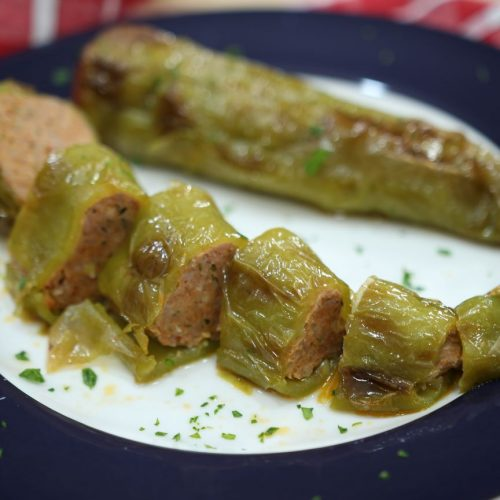

Stuffed Peppers

Description
This all in one dish of Italian frying peppers stuffed to perfection with a mixture of Italian hot sausage,
mozzarella cheese, garlic and parsley is a delicious treat, whether served as an appetizer at a gathering
or as a main course for a family dinner.
Ingredients
- 4-6 Italian Frying Peppers
- 1 lb. Italian Hot Sausages casings removed
- 3 Garlic Cloves minced
- 2 Tbsp. Parsley chopped
- 1 cup Mozzarella Cheese shredded
- 1/2 cup Salsa
- Salt and Black Pepper to taste
- Hot Pepper Flakes to taste
- Extra Virgin Olive Oil
Steps
- Begin by preheating the oven to 400°F (200°C). Place rack in middle position.
- Meanwhile, cut the tops off the Italian frying peppers and remove the seeds and membranes from the inside.
- In a mixing bowl, combine the sausage, salsa, parsley, garlic, hot pepper flakes, mozzarella cheese, salt,
and pepper. Mix everything together until well combined.
- Carefully stuff each pepper with the sausage mixture. Place the stuffed peppers in a baking dish or on a
baking sheet. Drizzle them with olive oil and use your hands to coat them well.
- Transfer the dish to the preheated oven and bake for approximately 25 minutes. Remove from the oven and
flip them over onto the other side. Place back in the oven and bake for about another 25 minutes, or until
the peppers have softened and the filling is heated through.
- Remove the peppers from the oven and let them cool for a few minutes before serving.
Home